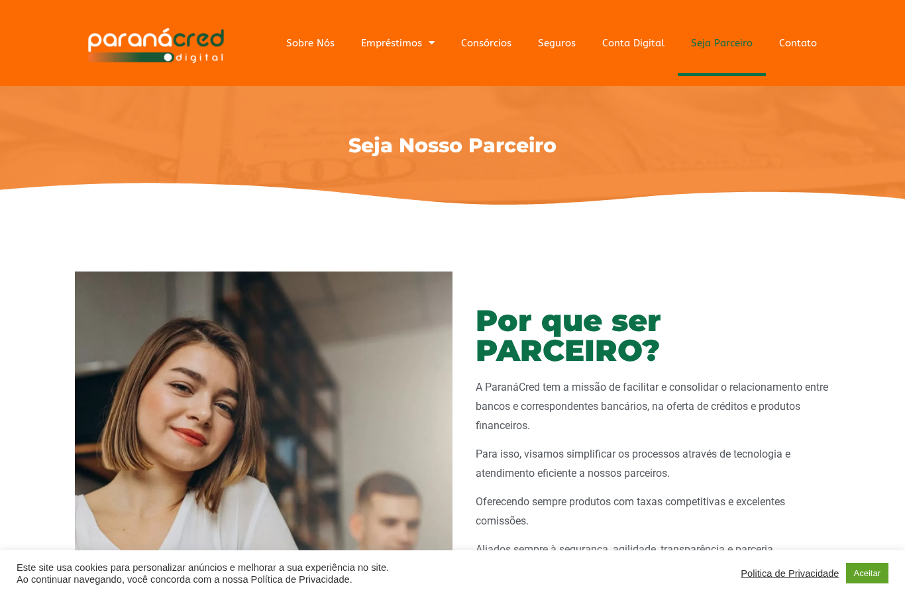
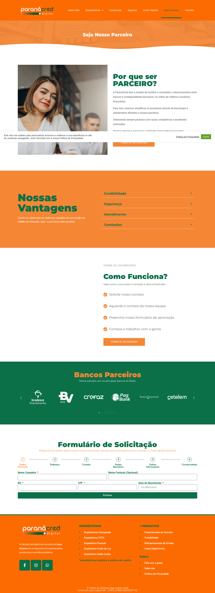

Sistema de Investigação de Marca e Identidade Online
https://paranacred.com.br/seja-parceiro/
Prioridade: MEDIUM · Cenário: B_AMBIGUOUS_COMMUNICATION · Revisão humana: PENDING
O estabelecimento comercial ParanáCred (Jonas de Lara Lopes ME) possui identidade visual própria preponderante e identifica devidamente seu CNPJ. A marca do Banco BV é utilizada de forma secundária em um carrossel de bancos parceiros. Todavia, a ausência de declaração formal de correspondente bancário e a falta de disponibilização do canal de Ouvidoria institucional (Resolução CMN nº 4.935/2021) demandam revisão e adequação regulatória. [Revisor: CONFIRM] A hipótese do analista é confirmada. A página pertence à ParanáCred (promotora de crédito e correspondente bancário), que exibe o logotipo do Banco BV em carrossel de bancos parceiros (E-IMG-8, E-SHOT-FULL). Embora a identidade visual da própria empresa predomine e seu CNPJ esteja declarado no rodapé (E-HEAD-5, E-FTR), não constam as informações regulatórias obrigatórias de identificação da condição de correspondente, atribuições e canal de ouvidoria do Banco BV, conforme estabelece a Resolução CMN nº 4.935/2021. Trata-se de vínculo comercial com pendência de adequação de transparência, justificando a manutenção de REVIEW_REQUIRED.


| Ref | Tipo | Local | Conteúdo |
|---|---|---|---|
| E-URL | domain | url | URL final: https://paranacred.com.br/seja-parceiro/ (domínio: paranacred.com.br) |
| E-DISC-001 | text | search_index | Índice de busca (grounding): paranacred.com.br — **URL:** `https://www.paranacred.com.br/` | Exibe na galeria de convênios o arquivo `Logo-Banco-BV-Financeira.png` | Embora mencione ser correspondente de instituições do mercado, utiliza logomarca e nomenclatura legadas da BV Financeira e não traz no rodapé o detalhamento da razão social, CNPJ e o rol de atribuições contratuais nos moldes estritos do art. 15 da Resolução CMN nº 4.935/2021 |
| E-SHOT-VIEWPORT | screenshot | viewport | evidence/C2a74af9502/attempt-1/viewport.png (sha256 bce5152ff348079a…) |
| E-SHOT-FULL | screenshot | page | evidence/C2a74af9502/attempt-1/fullpage.png (sha256 1d11c0cf4f79647a…) |
| E-TITLE | title | head | Seja Parceiro – ParanáCred |
| E-CANONICAL | meta | head | https://paranacred.com.br/seja-parceiro/ |
| E-HEAD-1 | heading | page | Por que ser PARCEIRO? |
| E-HEAD-2 | heading | page | Nossas Vantagens |
| E-HEAD-3 | heading | page | Como Funciona? |
| E-HEAD-4 | heading | page | Veja como o processo é simples e descomplicado: |
| E-HEAD-5 | heading | page | © Todos os direitos reservados 2026 Jonas de Lara Lopes ME - CNPJ 21.960.480/0001-02 |
| E-HDR | text | header | Sobre Nós Empréstimos Consórcios Seguros Conta Digital Seja Parceiro Contato | Sobre Nós Empréstimos Consórcios Seguros Conta Digital Seja Parceiro Contato |
| E-FOLD | text | viewport (acima da dobra) | Sobre Nós Empréstimos Consórcios Seguros Conta Digital Seja Parceiro Contato Seja Nosso Parceiro Por que ser PARCEIRO? A ParanáCred tem a missão de facilitar e consolidar o relacionamento entre bancos e correspondentes bancários, na oferta de créditos e produtos financeiros. Para isso, visamos simplificar os processos através de tecnologia e atendimento eficiente a nossos parceiros. Oferecendo sempre produtos com taxas competitivas e excelentes comissões. Aliados sempre à segurança, agilidade, transparência e parceria. TORNE-SE UM PARCEIRO Este site usa cookies para personalizar anúncios e melhorar a sua experiência no site. Ao continuar navegando, você concorda com a nossa Política de Privacidade. Politica de Privacidade Aceitar |
| E-FTR | text | footer | A ParanáCred Digital tem as melhores taxas de juros em consignados para aposentados, pensionistas e servidores públicos. Facebook-f Instagram Whatsapp EMPRÉSTIMOS Empréstimos Consignado Empréstimos FGTS Empréstimo Pessoal Empréstimo Conta de Luz Empréstimo Saldo Cartão *empréstimos sujeitos a análise de crédito + PRODUTOS Financiamento de Veículos Portabilidade Refinanciamento de Dívidas Conta Digital Grátis Sobre Fale com a gente Sobre nós Política de Privacidade © Todos os direitos reservados 2026 Jonas de Lara Lopes ME - CNPJ 21.960.480/0001-02 | A ParanáCred Digital tem as melhores taxas de juros em consignados para aposentados, pensionistas e servidores públicos. Facebook-f Instagram Whatsapp EMPRÉSTIMOS Empréstimos Consignado Empréstimos FGTS Empréstimo Pessoal Empréstimo Conta de Luz Empréstimo Saldo Cartão *empréstimos sujeitos a análise de crédito + PRODUTOS Financiamento de Veículos Portabilidade Refinanciamento de Dívidas Conta Digital Grátis Sobre Fale com a gente Sobre nós Política de Privacidade |
| E-NAV | nav | header | <https://paranacred.com.br/> | Sobre Nós <https://paranacred.com.br/sobre-nos-paranacred/> | Empréstimos <https://paranacred.com.br/emprestimo> | Consórcios <https://paranacred.com.br/consorcios/> | Seguros <https://paranacred.com.br/seguros/> | Conta Digital <https://agx.link/poqSQl2O2> | Seja Parceiro <https://paranacred.com.br/seja-parceiro/> | Contato <https://paranacred.com.br/contato/> |
| E-CTA-1 | cta | page | TORNE-SE UM PARCEIRO <https://paranacred.com.br/seja-parceiro/#contato> |
| E-CTA-2 | cta | page | TORNE-SE UM PARCEIRO <https://paranacred.com.br/seja-parceiro/#contato> |
| E-CTA-3 | cta | page | Próximo |
| E-CTA-4 | cta | page | Politica de Privacidade |
| E-CTA-5 | cta | page | Aceitar |
| E-CONTACT-1 | contact | footer | Facebook-f <https://www.facebook.com/paranacredfinanceira/> |
| E-CONTACT-2 | contact | footer | Instagram <https://www.instagram.com/parana_cred/> |
| E-CONTACT-3 | contact | footer | Whatsapp <https://api.whatsapp.com/send/?phone=5546991020470&text=Ol%C3%A1+vim+pelo+site+e+gostaria+de+receber+atendimento&type=phone_number&app_absent=0> |
| E-IMG-1 | image | page | imagem alt='Logo-PNG-Santander.png' src=https://paranacred.com.br/wp-content/webp-express/webp-images/uploads/elementor/thumbs/Logo-PNG-Santander-po1mrxtyklvphzrwpvpyrqk6vspe20q9k4u6mcd3ks.png.webp (150x150, abaixo da dobra) |
| E-IMG-2 | image | page | imagem alt='Logo-PNG-Facta-Financeira-SA.png' src=https://paranacred.com.br/wp-content/webp-express/webp-images/uploads/elementor/thumbs/Logo-PNG-Facta-Financeira-SA-po1mrxtyklvphzrwpvpyrqk6vspe20q9k4u6mcd3ks.png.webp (150x150, abaixo da dobra) |
| E-IMG-3 | image | page | imagem alt='Logo-PNG-Itau.png' src=https://paranacred.com.br/wp-content/webp-express/webp-images/uploads/elementor/thumbs/Logo-PNG-Itau-po1mrxtyklvphzrwpvpyrqk6vspe20q9k4u6mcd3ks.png.webp (150x150, abaixo da dobra) |
| E-IMG-4 | image | page | imagem alt='Logo-PNG-Banco-PAN.png' src=https://paranacred.com.br/wp-content/webp-express/webp-images/uploads/elementor/thumbs/Logo-PNG-Banco-PAN-po1mrxtyklvphzrwpvpyrqk6vspe20q9k4u6mcd3ks.png.webp (150x150, abaixo da dobra) |
| E-IMG-5 | image | page | imagem alt='Logo-PNG-C6-Bank.png' src=https://paranacred.com.br/wp-content/webp-express/webp-images/uploads/elementor/thumbs/Logo-PNG-C6-Bank-po1mrxtyklvphzrwpvpyrqk6vspe20q9k4u6mcd3ks.png.webp (150x150, abaixo da dobra) |
| E-IMG-6 | image | page | imagem alt='Logo-PNG-Safra.png' src=https://paranacred.com.br/wp-content/webp-express/webp-images/uploads/elementor/thumbs/Logo-PNG-Safra-po1mryrsrfwztlqjke4lc8bnh6kr9ptzw9ho3mbpek.png.webp (150x150, abaixo da dobra) |
| E-IMG-7 | image | page | imagem alt='Logo-Bradesco-Financiamentos.png' src=https://paranacred.com.br/wp-content/webp-express/webp-images/uploads/elementor/thumbs/Logo-Bradesco-Financiamentos-po1mrxtyklvphzrwpvpyrqk6vspe20q9k4u6mcd3ks.png.webp (150x150, abaixo da dobra) |
| E-IMG-8 | image | page | imagem alt='Logo-Banco-BV-Financeira.png' src=https://paranacred.com.br/wp-content/webp-express/webp-images/uploads/elementor/thumbs/Logo-Banco-BV-Financeira-po1mrxtyklvphzrwpvpyrqk6vspe20q9k4u6mcd3ks.png.webp (150x150, abaixo da dobra) |
| E-IMG-9 | image | page | imagem alt='Logo-Crefaz.png' src=https://paranacred.com.br/wp-content/webp-express/webp-images/uploads/elementor/thumbs/Logo-Crefaz-po1mrxtyklvphzrwpvpyrqk6vspe20q9k4u6mcd3ks.png.webp (150x150, abaixo da dobra) |
| E-IMG-10 | image | page | imagem alt='Logo-Pag-Bank.png' src=https://paranacred.com.br/wp-content/webp-express/webp-images/uploads/elementor/thumbs/Logo-Pag-Bank-po1mrxtyklvphzrwpvpyrqk6vspe20q9k4u6mcd3ks.png.webp (150x150, abaixo da dobra) |
| E-IMG-11 | image | page | imagem alt='Logo-PNG-Banco-Daycoval.png' src=https://paranacred.com.br/wp-content/webp-express/webp-images/uploads/elementor/thumbs/Logo-PNG-Banco-Daycoval-po1mrxtyklvphzrwpvpyrqk6vspe20q9k4u6mcd3ks.png.webp (150x150, abaixo da dobra) |
| E-IMG-12 | image | page | imagem alt='Logo-PNG-Cetelem.png' src=https://paranacred.com.br/wp-content/webp-express/webp-images/uploads/elementor/thumbs/Logo-PNG-Cetelem-po1mrxtyklvphzrwpvpyrqk6vspe20q9k4u6mcd3ks.png.webp (150x150, abaixo da dobra) |
| E-IMG-13 | image | page | imagem alt='Logo-PNG-Banco-BMG.png' src=https://paranacred.com.br/wp-content/webp-express/webp-images/uploads/elementor/thumbs/Logo-PNG-Banco-BMG-po1mrxtyklvphzrwpvpyrqk6vspe20q9k4u6mcd3ks.png.webp (150x150, abaixo da dobra) |
| E-IMG-14 | image | page | imagem alt='Logo-PNG-Mercantil-do-Brasil.png' src=https://paranacred.com.br/wp-content/webp-express/webp-images/uploads/elementor/thumbs/Logo-PNG-Mercantil-do-Brasil-po1mrxtyklvphzrwpvpyrqk6vspe20q9k4u6mcd3ks.png.webp (150x150, abaixo da dobra) |
| E-IMG-15 | image | page | imagem alt='Logo-PNG-Santander.png' src=https://paranacred.com.br/wp-content/webp-express/webp-images/uploads/elementor/thumbs/Logo-PNG-Santander-po1mrxtyklvphzrwpvpyrqk6vspe20q9k4u6mcd3ks.png.webp (150x150, abaixo da dobra) |
| E-IMG-16 | image | page | imagem alt='Logo-PNG-Facta-Financeira-SA.png' src=https://paranacred.com.br/wp-content/webp-express/webp-images/uploads/elementor/thumbs/Logo-PNG-Facta-Financeira-SA-po1mrxtyklvphzrwpvpyrqk6vspe20q9k4u6mcd3ks.png.webp (150x150, abaixo da dobra) |
| E-IMG-17 | image | page | imagem alt='Logo-PNG-Itau.png' src=https://paranacred.com.br/wp-content/webp-express/webp-images/uploads/elementor/thumbs/Logo-PNG-Itau-po1mrxtyklvphzrwpvpyrqk6vspe20q9k4u6mcd3ks.png.webp (150x150, abaixo da dobra) |
| E-IMG-18 | image | page | imagem alt='Logo-PNG-Banco-PAN.png' src=https://paranacred.com.br/wp-content/webp-express/webp-images/uploads/elementor/thumbs/Logo-PNG-Banco-PAN-po1mrxtyklvphzrwpvpyrqk6vspe20q9k4u6mcd3ks.png.webp (150x150, abaixo da dobra) |
| E-IMG-19 | image | page | imagem alt='Logo-PNG-C6-Bank.png' src=https://paranacred.com.br/wp-content/webp-express/webp-images/uploads/elementor/thumbs/Logo-PNG-C6-Bank-po1mrxtyklvphzrwpvpyrqk6vspe20q9k4u6mcd3ks.png.webp (150x150, abaixo da dobra) |
| E-IMG-20 | image | page | imagem alt='Logo-PNG-Safra.png' src=https://paranacred.com.br/wp-content/webp-express/webp-images/uploads/elementor/thumbs/Logo-PNG-Safra-po1mryrsrfwztlqjke4lc8bnh6kr9ptzw9ho3mbpek.png.webp (150x150, abaixo da dobra) |
| E-TXT-001 | text | page | Seja Parceiro |
| E-TXT-002 | text | page | Seja Nosso Parceiro |
| E-TXT-003 | text | page | Por que ser PARCEIRO? |
| E-TXT-004 | text | page | A ParanáCred tem a missão de facilitar e consolidar o relacionamento entre bancos e correspondentes bancários, na oferta de créditos e produtos financeiros. |
| E-TXT-005 | text | page | Para isso, visamos simplificar os processos através de tecnologia e atendimento eficiente a nossos parceiros. |
| E-TXT-006 | text | page | TORNE-SE UM PARCEIRO |
| E-TXT-007 | text | page | Atendimento |
| E-TXT-008 | text | page | TORNE-SE UM PARCEIRO |
| E-TXT-009 | text | page | TORNE-SE UM PARCEIRO |
| E-TXT-010 | text | page | Bancos Parceiros |
| E-TXT-011 | text | page | Temos parceria com os principais bancos do Brasil. |
| E-TXT-012 | text | page | Endereço |
| E-TXT-013 | text | page | Nome Fantasia (Opcional) |
| E-TXT-014 | text | page | |
| E-TXT-015 | text | page | Jonas de Lara Lopes ME - CNPJ 21.960.480/0001-02 |
| Dimensão | Sinal | Achado | Refs |
|---|---|---|---|
| VISUAL_IDENTITY | LEGITIMATE | Identidade visual própria consolidada da ParanáCred Digital (cores laranja e verde), sem mimetização da marca Banco BV. | E-SHOT-VIEWPORT E-SHOT-FULL |
| DECLARED_COMMERCIAL_IDENTITY | LEGITIMATE | Razão social (Jonas de Lara Lopes ME) e CNPJ (21.960.480/0001-02) informados de maneira clara no rodapé. | E-HEAD-5 E-FTR E-TXT-015 |
| CORRESPONDENT_TRANSPARENCY | CONFUSION | Não há menção formal à condição de correspondente bancário do Banco BV nem menção ao canal de Ouvidoria institucional. | E-FTR E-DISC-001 |
| INSTITUTIONAL_LANGUAGE | LEGITIMATE | Texto redigido em nome próprio da ParanáCred, convidando promotores e correspondentes a se tornarem parceiros. | E-HEAD-1 E-TXT-004 E-TXT-005 |
| LOGO_USAGE | NEUTRAL | Logotipo do Banco BV exibido em contexto multimarca na esteira de bancos parceiros, ao lado de outras instituições como Bradesco, Crefaz e PagBank. | E-IMG-8 E-SHOT-FULL E-TXT-010 |
| CONTACT_CHANNELS | LEGITIMATE | Canais de contato próprios da empresa (WhatsApp e redes sociais), sem canais simulando o banco oficial. | E-CONTACT-1 E-CONTACT-2 E-CONTACT-3 |
O estabelecimento comercial ParanáCred (Jonas de Lara Lopes ME) possui identidade visual própria preponderante e identifica devidamente seu CNPJ. A marca do Banco BV é utilizada de forma secundária em um carrossel de bancos parceiros. Todavia, a ausência de declaração formal de correspondente bancário e a falta de disponibilização do canal de Ouvidoria institucional (Resolução CMN nº 4.935/2021) demandam revisão e adequação regulatória.
O CNPJ da página não consta do cadastro, mas outro estabelecimento da mesma empresa (raiz 21.960.4, matriz/filial) consta de 'coban_registry_bv.csv (ref. 2026-10-06)'; confirmar se o contrato de correspondente abrange este estabelecimento.
| Tipo | Valor | Ref | Contexto |
|---|---|---|---|
| domain | paranacred.com.br | E-URL | |
| cnpj | 21.960.480/0001-02 | E-HEAD-5 | © Todos os direitos reservados 2026 Jonas de Lara Lopes ME - CNPJ 21.960.480/0001-02 |
| legal_name | 2026 Jonas de Lara Lopes ME | E-HEAD-5 | |
| social_profile | https://www.facebook.com/paranacredfinanceira/ | E-CONTACT-1 | |
| social_profile | https://www.instagram.com/parana_cred/ | E-CONTACT-2 | |
| legal_name | Jonas de Lara Lopes ME | E-TXT-015 | |
| Whatsapp <https://api.whatsapp.com/send/?phone=5546991020470&text=Ol%C3%A1+vim+pelo+site+e+gostaria+de+receber+atendimento&type=phone_number&app_absent=0> | E-CONTACT-3 |
Mapeamento indicativo para apoio à auditoria. Não constitui conclusão regulatória; a decisão definitiva pertence à auditoria.
Fonte: NORMATIVE
Art. 14. O contrato de correspondente deve estabelecer: [...] II - vedação à utilização, pelo contratado, de logomarca ou de outros atributos que sejam similares aos adotados pela instituição contratante em suas agências, postos de atendimento, sítio eletrônico na internet, aplicativo ou outras plataformas de comunicação em rede;
Hipótese: Uso de logomarca, uso excessivo/desproporcional ou de atributos similares aos adotados pela contratante em seus canais. Aplicável somente se confirmado o vínculo de correspondente.
Evidência observada: E-DISC-001 E-IMG-8 E-SHOT-FULL
Informação faltante:
Fonte: NORMATIVE
Art. 14. O contrato de correspondente deve estabelecer: [...] III - divulgação ao público, pelo contratado, de sua condição de prestador de serviços à instituição contratante, identificada pelo nome com que é conhecida no mercado, com descrição dos produtos e serviços oferecidos e canais de contato da instituição contratante, inclusive de sua ouvidoria, em local visível, em destaque e em formato legível, por meio de: a) sítio eletrônico do correspondente na internet, acessível na página inicial; b) aplicativo e outras plataformas de comunicação em rede do correspondente; [...]
Hipótese: Divulgação ao público da condição de prestador de serviços/parceria ausente, insuficiente, ambígua ou sem destaque. Aplicável somente se confirmado o vínculo de correspondente.
Evidência observada: E-DISC-001 E-FTR E-HEAD-5
Informação faltante:
Fonte: NORMATIVE
Art. 3º O correspondente atua por conta e sob as diretrizes da instituição contratante, que assume inteira responsabilidade pelo atendimento prestado aos clientes e usuários por meio do contratado.
Evidência observada: E-CONTACT-1 E-CONTACT-2 E-CONTACT-3
Limitações: requisitos contratuais/internos não fornecidos: mapeamento limitado ao texto normativo
Decisão: CONFIRM → REVIEW_REQUIRED / MEDIUM
A hipótese do analista é confirmada. A página pertence à ParanáCred (promotora de crédito e correspondente bancário), que exibe o logotipo do Banco BV em carrossel de bancos parceiros (E-IMG-8, E-SHOT-FULL). Embora a identidade visual da própria empresa predomine e seu CNPJ esteja declarado no rodapé (E-HEAD-5, E-FTR), não constam as informações regulatórias obrigatórias de identificação da condição de correspondente, atribuições e canal de ouvidoria do Banco BV, conforme estabelece a Resolução CMN nº 4.935/2021. Trata-se de vínculo comercial com pendência de adequação de transparência, justificando a manutenção de REVIEW_REQUIRED.
| Tema | Severidade | Questionamento | Refs |
|---|---|---|---|
| Nenhum questionamento | |||
| Fonte | Consulta / hipótese | URL original | Título / trecho |
|---|---|---|---|
| grounding | Objetivo: Páginas de financiamento que expõem arquivos de logotipo da marca ou logo antiga (B vermelho / V azul).
Execute no Google Search as seguintes consultas (dorks):
- (inurl:logo-bv OR "logo-bv" OR "logo-bv-financeira" OR "logo antiga bv" OR "bv logo antiga") (financiamento OR veículos OR crédito) -site:bv.com.br -site:bancobv.com.br -site:bvfinanceira.com.br -site:bvinvestimentos.com.br -site:napista.com.br -site:bvopen.com.br -site:meufinanciamentosolar.com.br -site:votorantim.com.br -site:vam.com.br -site:reclameaqui.com.br -site:jusbrasil.com.br -site:jus.br
- ("Logo Banco BV" OR "Logo bv financeira" OR "logo BV" OR "logo BV Financeira") (financiamento OR veículos OR consignado) -site:brandsoftheworld.com -site:logospng.org -site:bv.com.br -site:bancobv.com.br -site:bvfinanceira.com.br -site:bvinvestimentos.com.br -site:napista.com.br -site:bvopen.com.br -site:meufinanciamentosolar.com.br -site:votorantim.com.br -site:vam.com.br -site:reclameaqui.com.br -site:jusbrasil.com.br -site:jus.br
- ("BV Financeira" OR "Banco BV") ("logo antiga" OR "logotipo antigo" OR "marca antiga") -site:bv.com.br -site:bancobv.com.br -site:bvfinanceira.com.br -site:bvinvestimentos.com.br -site:napista.com.br -site:bvopen.com.br -site:meufinanciamentosolar.com.br -site:votorantim.com.br -site:vam.com.br -site:reclameaqui.com.br -site:jusbrasil.com.br -site:jus.br
Liste de forma abrangente as páginas públicas encontradas (até 12 resultados distintos), informando para cada uma o nome do estabelecimento/perfil, a URL e como a marca é utilizada (destaque visual, título, feirão, simulador, redes sociais e se há ou não identificação clara de CNPJ e condição de correspondente bancário). H1-identity:logo-assets | https://paranacred.com.br/seja-parceiro/ | paranacred.com.br **URL:** `https://www.paranacred.com.br/` | Exibe na galeria de convênios o arquivo `Logo-Banco-BV-Financeira.png` | Embora mencione ser correspondente de instituições do mercado, utiliza logomarca e nomenclatura legadas da BV Financeira e não traz no rodapé o detalhamento da razão social, CNPJ e o rol de atribuições contratuais nos moldes estritos do art. 15 da Resolução CMN nº 4.935/2021 |
Original: https://paranacred.com.br/seja-parceiro/
Final: https://paranacred.com.br/seja-parceiro/
| Artefato | Caminho | SHA-256 | Bytes |
|---|---|---|---|
| screenshot_viewport | evidence/C2a74af9502/attempt-1/viewport.png | bce5152ff348079a5a3f17f4ecb0f7e3961555e2106d0f737bfcf9abfa9d074f | 387317 |
| screenshot_full | evidence/C2a74af9502/attempt-1/fullpage.png | 1d11c0cf4f79647ab21c40a7555b37f45cc28b8c0d86bb89b62b0ea8e5e3195f | 629600 |
| html | evidence/C2a74af9502/attempt-1/page.html.txt | 5ea1b19e627ec806a64635b4c1cb753c3f9a56049961a7a9d74970efcb512b77 | 155360 |
| text | evidence/C2a74af9502/attempt-1/text.txt | 0146300f3741ea8ae60cd48f2341de7dac596c3c02d6815e87f0d1a632ea7366 | 2163 |
| page_data | evidence/C2a74af9502/attempt-1/page.json | 27b08fa0d552ee29bc9eaa861e250d1678f70620162f6e83b4f8ac25130320ac | 19916 |
| Quando | De | Para | Nota |
|---|---|---|---|
| 2026-11-25T18:12:02+00:00 | DISCOVERED | QUEUED | prioritised (score 3.5) |
| 2026-11-25T18:20:14+00:00 | QUEUED | COLLECTING | |
| 2026-11-25T18:20:23+00:00 | COLLECTING | COLLECTED | |
| 2026-11-25T18:20:23+00:00 | COLLECTED | ANALYZING | |
| 2026-11-25T18:20:45+00:00 | ANALYZING | REVIEWING | |
| 2026-11-25T18:20:54+00:00 | REVIEWING | COMPLETED |